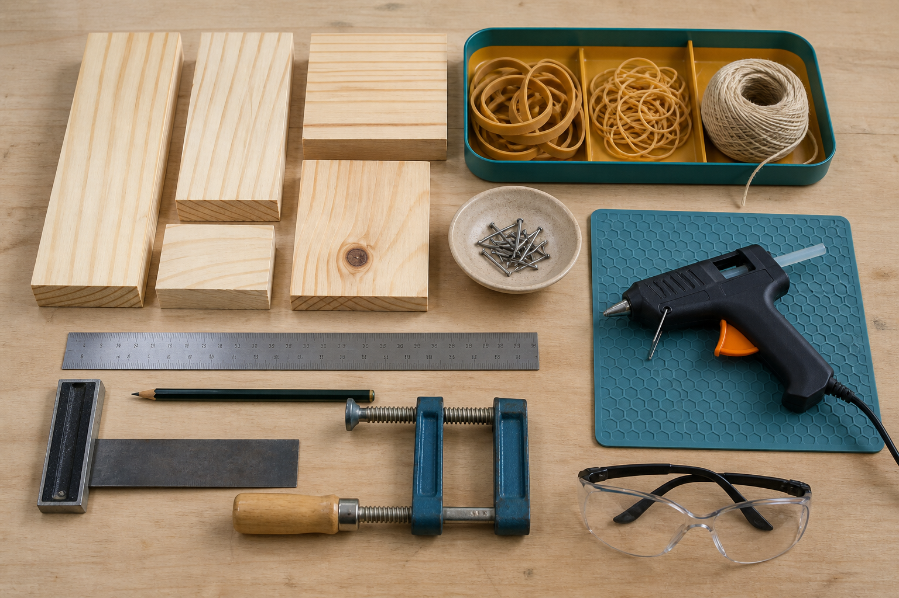
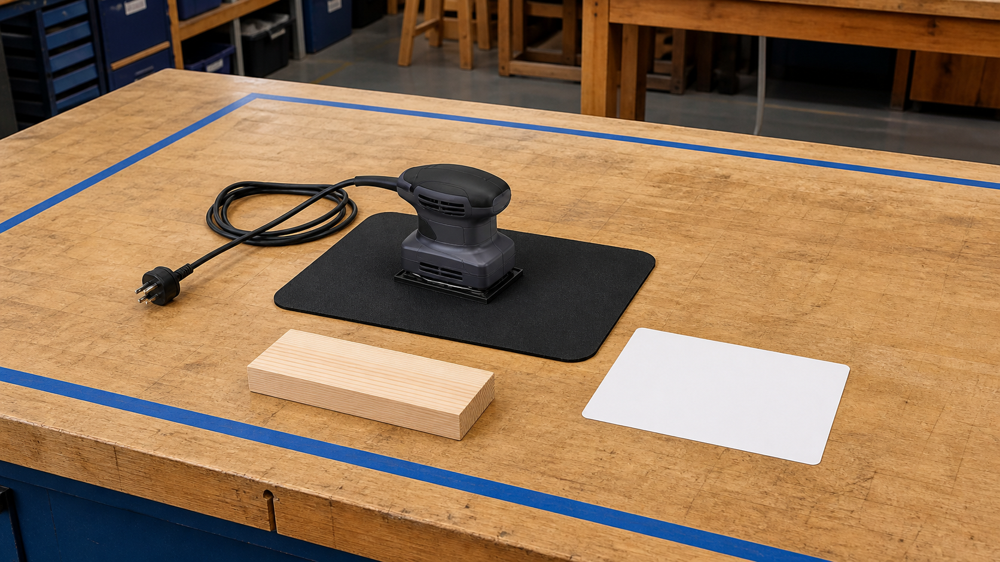
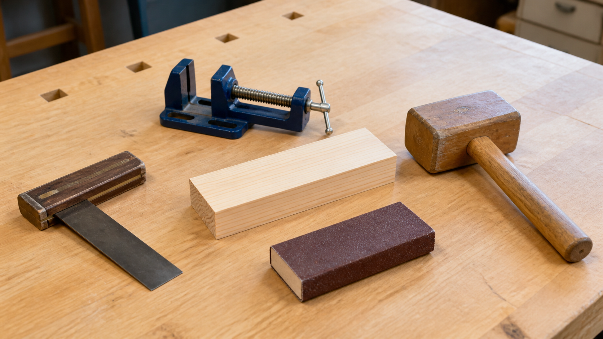
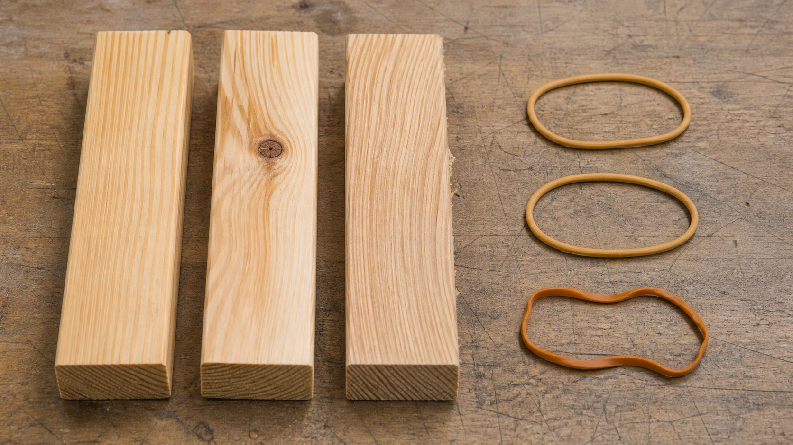

Finishing a safety module means I can use any equipment by myself.
Training is one part of readiness; teacher permission, demonstration, local controls and current conditions still apply.
Module 2 of 10
Workshop readiness means making careful decisions before, during and after practical work. It combines hazard awareness, teacher-approved controls, suitable tool selection and knowledge of materials. Being ready is not about pretending that risk has disappeared; it is about recognising when to proceed, when to pause and when to ask.
Use this page to learn and prepare. Follow your teacher's demonstration, approved tools, local safety controls and testing instructions for every practical action.

Theory 1 of 3
A hazard is something with the potential to cause harm. Risk describes how likely that harm is and how serious it could be in a particular situation. These ideas depend on context. A material, tool or process may present different risks depending on its condition, the task, the people involved and the controls in place. This is why a general website cannot replace the local workshop rules, teacher demonstration or required training.
A safe decision starts by noticing the hazard, stopping long enough to think and following the teacher-approved control. If the task, equipment or instruction is unclear, the correct action is to stop and ask. OnGuard modules, permission to use equipment and local procedures are controlled by your teacher. Completing an online module also does not replace listening, checking the work area or responding when conditions change.

Multiple-choice knowledge check
Choose an answer, check the feedback and try again if needed. Your checked progress is saved on this device.
0 of 4 questions checkedSaved on this device
Longer response
Before a teacher-approved practical task begins, a student notices that one instruction is unclear and that the work area is not in the condition they expected. Explain why pausing is part of a planned safety system rather than a failure to be ready.
Use the scaffold to explain and justify your thinking. No drawing is required. Your writing autosaves in this browser.
Formative learning evidence — not proof of submission.
Theory 2 of 3
Tools can be grouped by the job they help perform. Measuring and marking tools help communicate size and position. Holding tools keep work supported. Cutting, shaping and drilling tools remove or change material in different ways. Joining tools and fasteners connect components. Thinking in functions helps you explain why a tool suits a task instead of choosing it because it is familiar or powerful.
Selection also depends on material, accuracy, access, finish and the teacher-approved process. Two tools in the same category can leave different results or suit different situations. Before practical work, you should be able to state the required function, identify the approved tool or process, and explain what evidence would show the result is ready for the next stage. Operating instructions must come from your teacher and the local workshop procedure.

Multiple-choice knowledge check
Choose an answer, check the feedback and try again if needed. Your checked progress is saved on this device.
0 of 4 questions checkedSaved on this device
Longer response
A planned component needs a position communicated clearly before later work can begin. Explain how a student should move from the required function to a teacher-approved tool decision and a meaningful readiness checkpoint.
Use the scaffold to explain and justify your thinking. No drawing is required. Your writing autosaves in this browser.
Formative learning evidence — not proof of submission.
Theory 3 of 3
Pine can suit classroom prototyping because many forms are workable and readily available, but pine is not perfectly uniform. Grain direction, knots, moisture and natural variation can affect how a piece behaves. Engineers inspect the actual material rather than assuming every piece will respond in the same way. Material choice also considers function, availability, durability, waste and the processes that are approved for the project.
Elasticity is the ability of a material to change shape under a force and return towards its earlier shape when the force is removed. Elastic deformation is temporary; permanent deformation remains after the force is removed. A material can also be damaged or fail if it is used beyond a suitable range. For this course, the exact elastic component, arrangement and limits are teacher controlled. The theory helps you observe behaviour, not set your own operating conditions.

Multiple-choice knowledge check
Choose an answer, check the feedback and try again if needed. Your checked progress is saved on this device.
0 of 4 questions checkedSaved on this device
Longer response
Before practical work, one pine piece has a visible knot and a material sample in a teacher-controlled demonstration does not fully return after the force is removed. Explain what these observations suggest, what they do not prove, and what should be confirmed next.
Use the scaffold to explain and justify your thinking. No drawing is required. Your writing autosaves in this browser.
Formative learning evidence — not proof of submission.
Worked example
Vocabulary
Common traps
Training is one part of readiness; teacher permission, demonstration, local controls and current conditions still apply.
Timber varies, so grain, knots, condition and the actual piece must be considered.
Video learning · 3:12
Victorian Woodworkers Association
Watch for: Which controls must be in place before work begins, and which safety details must still come from our teacher?
Source boundary: General safety thinking only. The shown workshop is not the local workshop; teacher, OnGuard and local controls always apply.

Use the readiness and hazard-control checklist, then complete the teacher-led local workshop orientation. Classify controls as PPE, behaviour, environment or teacher authorisation.
The privacy-enhanced player loads only when you choose it.
Applied Learning Activity
Practise matching a design need to a material property, a tool function and a teacher-confirmation point.
Evidence to save: Completed decision grid and one justified stop/ask response, saved as formative practice.
Type the response, reasoning or record requested above. It autosaves in this browser.
Use: ‘The function needs ___, so the relevant property is ___. Before practical work, the teacher must confirm ___.’
Compare two possible material choices using function, workability, durability and sustainability, without changing the authorised project materials.
Higher-order evidence
A student needs to prepare one timber component, but the exact local process has not been supplied on the website. Explain how the student should make a safe, evidence-based preparation decision.
Type your response. No drawing is required. It autosaves in this browser.